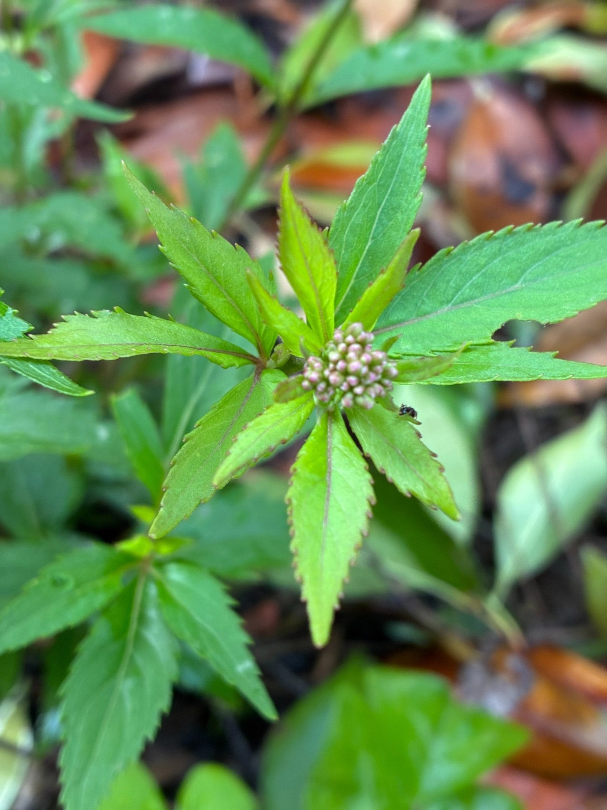

わずか14日で一回り成長
2025年9月6日に庭へ地植えしたフジバカマのうち、白花の1苗がこの白フジバカマです。園芸用に選抜・改良されたタイプですが、原種系のフジバカマとして育てています。
植え付けからまだ14日しか経っていませんが、成長は非常に早く感じます。茎の太さには大きな変化がないものの、背丈も横幅もそれなりに伸び、購入時より一回り大きくなりました。

予想に反して、5苗すべてに多数の蕾
購入時は背丈約20cmの小さな苗だったため、今年の開花は難しいのではないかと考えていました。しかし予想以上に成長し、植え付けた5苗すべてに蕾が付きました。蕾の数も多く、今後の開花が楽しみな状態です。
中でも意外だったのが白花株で、5苗の中で最も成長が早く見えます。
茎・葉・蕾の様子
茎には赤みがあり、葉は縁にギザギザが見られ、3つに裂けた形をしています。蕾は茎の先端に房状にまとまっています。ほかの株では紫赤色からピンクを帯びた蕾も見られ、羽衣の紫赤色とは少し違った印象です。
今回の観察ポイント
小さな苗でも、環境や株の状態によっては葉や茎を伸ばす栄養成長から、花を付ける生殖成長へ移行することがあります。今回の早い蕾形成も、株の成熟度や日長など複数の条件が重なった可能性があります。
小さな苗でも、環境や株の状態によっては葉や茎を伸ばす栄養成長から、花を付ける生殖成長へ移行することがあります。今回の早い蕾形成も、株の成熟度や日長など複数の条件が重なった可能性があります。
猛暑がようやく落ち着く
2025年も厳しい暑さが続き、9月20日直前まで最高気温30℃以上の真夏日が続きました。ようやく9月20日頃から最高気温が30℃を下回る日が出てきて、過ごしやすさを感じるようになりました。
来年は挿し木で増やしたい
種から増やすよりも確実に同じ株の特徴を残したいため、来年は挿し木で株を増やしてみる予定です。まずは今年、この蕾がどのように開花していくのか記録していきます。
0 件